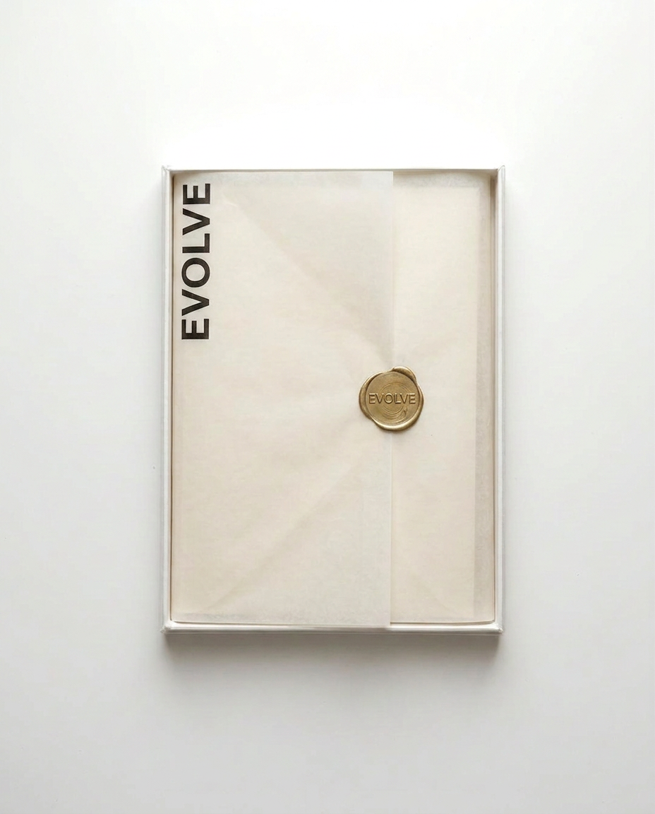

Take Charge of Your Evolution.

Evolve arrived as a stationery brand with real craft behind it, but no framework for what it actually was. The products — a journal, a planner, a calendar — existed, but the brand hadn't yet decided whether it was selling paper goods or something people would build a daily ritual around.
The task was to position Evolve as a luxury daily-practice brand, not a stationery company — and build every material, from leather to wax seal, to carry that intention.
A stationery brand leading the way in evolving through daily practices — intentional planners, insightful journals, and community-rooted experiences. Every color exists in the physical world of the product before it appears on screen: crimson leather, parchment paper, burnished bone.
The mark uses an interlocking diamond form — a reference to growth, cardinal directions, and the continuous nature of personal evolution. Always paired with the wordmark at smaller scales, it becomes the quiet signature across every material the brand touches.
EB Garamond carries the editorial voice at full presence; Jost ExtraLight holds every label, callout, and navigation moment. Two typefaces, one continuous practice.
The packaging system was designed to be unwrapped deliberately — a sequence of reveals that prepares the person to use what's inside. A matte black outer box, debossed with the wordmark. Parchment tissue wrap, sealed in crimson wax. A hand-stamped linen tag, tied with ribbon. Nothing is wasted. Every material signals intention.
"Every detail is a decision. Every decision is a message."
Leather, emboss, and botanical detail — objects worthy of daily ritual. The Daily Journal in full-grain crimson leather. The Daily Planner in croc-emboss, closed with a brass tab. The Daily Calendar, botanical emboss pressed into brushed metal.
Four disciplines, one continuous practice — brand, mark, packaging, and storefront built as a single material world. Evolve now reads as a daily-practice brand people build a ritual around, not a stationery line competing on price.
This project was shaped by a shared belief that a written page still carries something no screen can replicate. Thank you for trusting that belief through every material decision.
Continue to the Next Project →